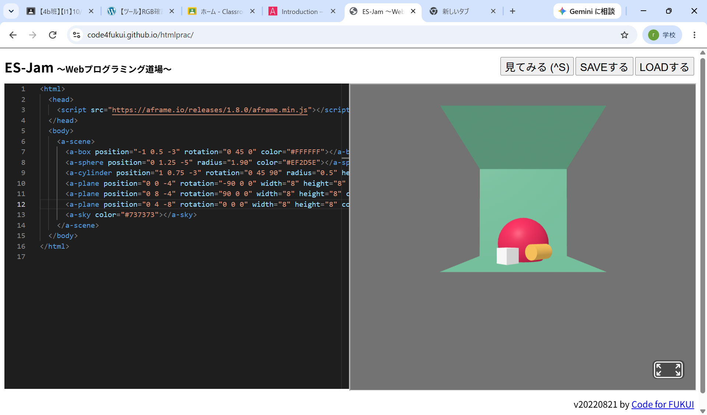

第3週目
3-1 JavaScript体験：VR空間を作る

自作した３次元空間
1.内容
JavaScriptを用いて、ブラウザ上で動く3次元VR空間の作成を行った。
コードで空間を作る仕組みを理解し、それを活用して様々な空間を作った。
球体や立方体などのオブジェクトを配置し、位置や色の値を変更して空間をデザインした。
2.感想
最初はどの文字がどういう意味でどういうコードになっているのかがわかりませんでしたが、
ペアと協力したり頑張って考えてみると思った通りに物体が動き、
それが画面上に反映されるのが面白かったです。
JavaScriptを用いて、ブラウザ上で動く3次元VR空間の作成を行った。
コードで空間を作る仕組みを理解し、それを活用して様々な空間を作った。
球体や立方体などのオブジェクトを配置し、位置や色の値を変更して空間をデザインした。
2.感想
最初はどの文字がどういう意味でどういうコードになっているのかがわかりませんでしたが、
ペアと協力したり頑張って考えてみると思った通りに物体が動き、
それが画面上に反映されるのが面白かったです。
3-2 JavaScript体験：伝言プログラムを作る

伝言板
1.内容
入力されているコードの意味を理解し、説明を聞きながら入力・修正して、
ユーザーがリアルタイムで文字を残すことができる
伝言板をブラウザ上で作成した。 2.感想
伝言板のほうは個人的にVR空間を作るよりも理解しやすかった。
そのためペアの人がコードの理解や不適切な文字の使い方などを指摘しあったりして、
面白かった。間違っているときに何が原因で動いてないかを考えてから、
修正すると作業が捗りました。
入力されているコードの意味を理解し、説明を聞きながら入力・修正して、
ユーザーがリアルタイムで文字を残すことができる
伝言板をブラウザ上で作成した。 2.感想
伝言板のほうは個人的にVR空間を作るよりも理解しやすかった。
そのためペアの人がコードの理解や不適切な文字の使い方などを指摘しあったりして、
面白かった。間違っているときに何が原因で動いてないかを考えてから、
修正すると作業が捗りました。